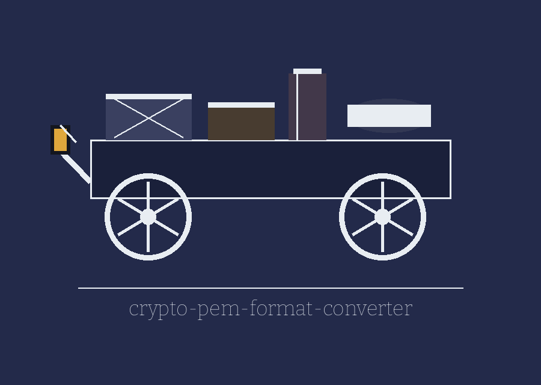

crypto-pem-format-converter: The Moonlight Flit of the Country House
Theme: The Moonlight Flit of the Country House. Headings in Bitcount, running text in Bitter.

Source, One Only
Travelling Form
What Is Being Carried
Wrapping for the Road
Set Down At, Blank to Print
Purpose entry
The tool takes a PEM encoded private key, public key or Diffie Hellman parameter set and rewrites it into another container form, naming the forms exactly as the parser names them: PKCS8, PKCS1, TraditionalOpenSSL and SubjectPublicKeyInfo. The choice is not free in every direction, since a public key can be written only as SubjectPublicKeyInfo, while PKCS1 output is open only to RSA private keys and is produced in its TraditionalOpenSSL form, the block headed as an RSA private key.
Inputs entry
Exactly one source must be given: file path, pasted private key, pasted public key or pasted DH parameters, held in a mutually exclusive group that the parser enforces. The key type option, which defaults to private and may be set to public or dhparams, must match what actually arrived, because the source flag does not settle the type and a public key pasted under the private type is sent to the private loader and fails there.
Formats entry
The defaults are PKCS8 for a private key and SubjectPublicKeyInfo for a public key. On the DH parameters branch the format choice is ignored altogether and the parameters are written in their single PKCS3 PEM form whatever was requested.
Wrapping entry
The encryption option offers none or best and defaults to none. The password option supplies one password that does two jobs inside a single run, opening an encrypted input where the input is encrypted, and sealing the output when best has been chosen, with a run under best and no password ending in refusal. Detection of an encrypted input rests on a substring search of the text, stated openly here because a text that merely contained that word would be treated as an encrypted key. No password value is shown anywhere in this re-skin.
Closing entries
With no output file named, the converted PEM is printed to standard output in full; with one named, it is written there and the writing is logged. Bad input, a format unsupported for the key type in hand, an unsupported algorithm, a wrong password or a missing file each end the run at exit 1. The requirement is Python 3 with the cryptography package at version 41.0.7 or later. The licence is MIT, held in the LICENSE file. No live run is claimed here, because the cryptography package was not installed in the environment where the README was verified, so even the help output stopped at that import.
Preserved live README record
# crypto-pem-format-converter Converts a PEM encoded private key, public key, or Diffie-Hellman parameter set between container formats: PKCS8, TraditionalOpenSSL, SubjectPublicKeyInfo for public keys, and PKCS1 for RSA private keys (written in its TraditionalOpenSSL form, the `BEGIN RSA PRIVATE KEY` block). ## Requirements - Python 3 - `cryptography` 41.0.7 or later (see requirements.txt) ## Install ```bash git clone https://github.com/ShadowGuard-AI/crypto-pem-format-converter.git cd crypto-pem-format-converter pip install -r requirements.txt ``` ## Usage ```bash python3 main.py -i private.pem -f PKCS8 -t private python3 main.py -i private.pem -f PKCS1 -t private python3 main.py -i public.pem -t public python3 main.py -i private.pem -t private -e best -pw "secret" -o encrypted.pem ``` With no `-f`, a private key defaults to PKCS8 and a public key to SubjectPublicKeyInfo. With no `-o`, the converted PEM is printed to stdout. Bad input, an unsupported format for the key type, or a wrong password exits 1. ## Parameters - `-i`, `--input-file`: Path to the input PEM file. Alternatives are `-p` (paste a private key), `-u` (paste a public key), and `-params` (paste DH parameters); exactly one input source is required. - `-o`, `--output-file`: Path to the output PEM file (default: stdout). - `-f`, `--output-format`: `PKCS1`, `PKCS8`, `SubjectPublicKeyInfo`, or `TraditionalOpenSSL`. - `-t`, `--key-type`: `private`, `public`, or `dhparams` (default: private). The type must match the input. - `-e`, `--encryption`: `none` or `best` for private key output (default: none). - `-pw`, `--password`: Password that decrypts an encrypted input key, and that encrypts the output when `-e best` is given. One password serves both jobs in a single run. ## Verified run note The usage and parameters above are taken from the argument parser in `main.py`. A live run in this environment is blocked because the `cryptography` package is not installed here, so even `--help` stops at that import; no run result is claimed for this tool. ## License Licensed under the terms in LICENSE.